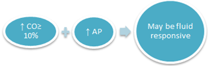

Chỉ Số Day Strain (0–21) Là Gì?
Không giống như các đồng hồ bấm giờ tập luyện truyền thống chỉ ghi nhận dữ liệu khi bạn chủ động bấm nút "Bắt đầu", Day Strain (Tải trọng Ngày)—được tiên phong bởi WHOOP và có cơ chế tương đồng với Garmin Acute Training Load hay Oura Activity Burn—là một chỉ số theo dõi liên tục suốt 24 giờ trên thang điểm từ 0.0 đến 21.0.
Ngay từ khoảnh khắc bạn thức dậy, cơ thể đã tiêu tốn năng lượng tim mạch và thần kinh-cơ không chỉ trong 60 phút tập gym, mà cả khi bạn vội vã chạy qua sảnh sân bay, xách đồ nặng leo cầu thang, hay đứng thuyết trình căng thẳng khiến hormone adrenaline đẩy nhịp tim tăng vọt. Day Strain đo lường tổng chi phí sinh lý nội tại tích lũy suốt 24 giờ—phản ánh cách cơ thể bạn phản ứng với áp lực chứ không chỉ đếm quãng đường hay mức tạ bên ngoài.

Tại Sao Thang Điểm Lại Từ 0 Đến 21—Và Vì Sao Nó Có Tính Logarit?
Người mới sử dụng thiết bị đeo thường thắc mắc tại sao thang điểm Strain lại dừng ở mốc 21.0 thay vì 100, và tại sao điểm số tăng vọt lên 8.0 ngay giữa buổi sáng của một ngày nghỉ ngơi, nhưng một buổi chạy biến tốc cực nặng vào buổi chiều lại chỉ nhích điểm số từ 15.2 lên 16.4.
- Lấy Cảm Hứng Từ Thang Đo Cảm Nhận Gắng Sức Borg RPE (6–20): Nhà sinh lý học người Thụy Điển, Tiến sĩ Gunnar Borg, đã thiết kế thang đo lâm sàng Rating of Perceived Exertion (RPE) từ 6 đến 20 để phản chiếu nhịp tim con người (
60 bpmkhi nghỉ ngơi đến200 bpmkhi gắng sức tối đa). Các nhà khoa học thể thao đã chuyển hóa nguyên lý này thành thang đo tải trọng sinh lý từ 0 đến 21. - Đường Cong Logarit (Phi Tuyến Tính): Tiêu hao năng lượng của con người và Xung lượng Tập luyện (TRIMP, Banister 1991) tích lũy theo cấp số nhân ở các vùng nhịp tim cao. Trên thang đo logarit, mỗi điểm số phía sau đều đòi hỏi nỗ lực khắc nghiệt hơn rất nhiều so với điểm ngay trước nó: - Tăng từ 0.0 lên 10.0 chỉ cần các hoạt động trao đổi chất cơ bản và đi lại nhẹ nhàng hàng ngày. - Tăng từ 10.0 lên 14.0 cần khoảng 30–45 phút vận động hiếu khí cường độ trung bình. - Tăng từ 14.0 lên 18.0 đòi hỏi công suất tim mạch cường độ cao lớn hơn gấp đôi so với chặng từ 10 lên 14. - Chạm ngưỡng 20.0+ gần như bất khả thi trong các buổi tập thông thường, chỉ xuất hiện khi chạy Marathon, thi đấu Ironman 3 môn phối hợp hoặc giải đấu kéo dài nhiều giờ liên tục.
| Phân Tầng Day Strain | Khoảng Điểm | Mức Tải Trọng Sinh Lý | Hoạt Động Thực Tế Tương Đương | Mức Phục Hồi (Recovery) Phù Hợp Buổi Sáng |
|---|---|---|---|---|
| Tải Trọng Nhẹ (Light) | 0.0 – 9.9 | Phục Hồi Chủ Động / Nghỉ Ngơi | Làm việc văn phòng, đi bộ nhẹ (< 8.000 bước), giãn cơ, yoga phục hồi hoặc ngày di chuyển tàu xe. |
Phục hồi Đỏ (1% – 33%) — Tăng lưu thông máu mà không làm tăng nợ thần kinh tự chủ. |
| Tải Trọng Vừa (Moderate) | 10.0 – 13.9 | Duy Trì Nền Tảng | 30–45 phút chạy bộ / đạp xe Zone 2, đánh cầu lông/pickleball giải trí hoặc tập tạ vừa phải. | Phục hồi Vàng (34% – 66%) — Duy trì thể lực nền tảng đồng thời bảo toàn sự ổn định HRV. |
| Tải Trọng Cao (High) | 14.0 – 17.9 | Quá Tải Tiến Triển / Phát Triển | 60–90 phút tập sức bền cường độ cao, lớp HIIT/CrossFit, hoặc buổi tập tạ đa khớp nặng. | Phục hồi Xanh (67% – 100%) — Kích thích siêu bù trừ ti thể và phát triển cơ bắp tối ưu. |
| Tải Trọng Tối Đa (All-Out) | 18.0 – 21.0 | Vượt Ngưỡng / Thi Đấu Đỉnh Cao | Chạy giải Marathon, đạp xe đường trường 100 km, chung kết giải đấu hoặc tập nặng 2 buổi/ngày. | Phục hồi Xanh Đỉnh Cao — Đòi hỏi bù đắp thêm 24–48 giờ ngủ sâu và nạp tinh bột sau đó. |
Khắc Phục "Điểm Mù Tập Tạ": Tải Trọng Tim Mạch vs. Tải Trọng Cơ Bắp
Trong nhiều năm, những người tập tạ nặng thường gặp một hạn chế gây nản lòng trên các vòng đeo tay chỉ đo nhịp tim: một buổi tập Squat và Deadlift cực nặng kéo dài 60 phút đôi khi chỉ ghi nhận mức tiêu hao calo và điểm Strain thấp (8.5) ngang ngửa với 30 phút đi bộ!
Tại sao vậy? Bởi vì tập kháng lực nặng là một kích thích kỵ khí và thần kinh-cơ. Trong một hiệp Squat 5 lần với mức tạ nặng, cơ xương của bạn phải chịu sức căng cơ học khổng lồ và sự chèn ép mạch máu cục bộ; nhưng vì hiệp tập chỉ diễn ra trong 20 giây rồi nghỉ ngồi tới 3 phút, nhịp tim trung bình cả tiếng đồng hồ vẫn ở mức khá thấp (105–115 bpm).
Các thiết bị đeo tiên tiến (như WHOOP Strength Trainer và Garmin Strength Load) đã giải quyết triệt để bài toán này bằng cách kết hợp hai luồng cảm biến:
- Tải trọng Tim mạch (Cảm biến quang học PPG): Đo thời gian nhịp tim nằm trong các vùng cường độ và lượng oxy tiêu thụ bù sau hiệp tập (EPOC).
- Tải trọng Cơ bắp (Gia tốc kế 3 trục + Con quay hồi chuyển): Đo vận tốc thanh đòn, cơ sinh học chuyển động, tổng khối lượng tạ (Số hiệp × Số lần × Mức tạ) và lực phát nổ—giúp các buổi tập tạ nặng được ghi nhận xứng đáng vào tổng điểm Day Strain cũng như Nhu cầu Giấc ngủ (Sleep Need) tối hôm đó.
Góc Nhìn Thực Tế: Nhận Diện Tải Trọng Ẩn Ngoài Phòng Tập
Biểu đồ Day Strain của bạn còn đóng vai trò như một radar cảnh báo sớm cho các tác nhân gây căng thẳng phi thể thao:
- Căng thẳng Tâm lý & Thuyết trình Áp lực Cao: Đứng bảo vệ dự án quan trọng hoặc lái xe giờ cao điểm có thể đẩy nhịp tim lên 100–120 bpm suốt nhiều giờ do hormone adrenaline tiết ra, cộng thêm 2.0 đến 3.5 điểm Strain dù bạn hầu như không bước đi.
- Hiện tượng Trôi Nhịp Tim Do Nắng Nóng & Mất Nước: Làm việc ngoài trời hoặc chạy bộ dưới thời tiết 32°C ẩm ướt buộc tim phải bơm máu ra dưới da để làm mát (cardiovascular drift), biến một cự ly chạy 5 km bình thường chỉ tốn 11.5 Strain thành một thử thách 14.8 Strain.
- Đứng Xem Hòa Nhạc Hoặc Sử Dụng Rượu Bia Buổi Tối: Đứng suốt 3 tiếng tại sự kiện âm nhạc trong trạng thái thiếu nước hoặc uống đồ có cồn có thể đẩy Day Strain vượt mốc 15.0, lý giải vì sao chỉ số HRV sáng hôm sau của bạn sụt giảm mạnh.
4 Thói Quen Thực Tế Để Làm Chủ Chỉ Số Day Strain
- Điều Chỉnh Mục Tiêu Strain Theo Điểm Phục Hồi Buổi Sáng: Hãy kiểm tra điểm Sẵn sàng (Readiness/Recovery) mỗi sáng trước khi quyết định cường độ tập. Vào ngày Xanh, hãy tự tin đẩy Strain lên vùng
14.0–17.9; vào ngày Đỏ, hãy giới hạn tổng Day Strain dưới10.0để hệ thần kinh tự chủ có cơ hội bật tăng trở lại. - Ngủ Sớm Hơn 30 Phút Sau Những Ngày Strain Vượt 16.0+: Tải trọng ngày cao làm tăng các cytokine tiền viêm và vi tổn thương sợi cơ. Hãy chủ động lên giường sớm hơn 30–45 phút bất cứ khi nào Day Strain vượt ngưỡng
16.0. - Bật Chế Độ Tập Kháng Lực Khi Nâng Tạ Nặng: Khi tập tạ với thời gian nghỉ giữa hiệp dài, hãy sử dụng tính năng ghi nhận bài tập tạ trên đồng hồ để tải trọng cơ học được tính toán chính xác vào mô hình phục hồi.
- Phân Cực Tải Trọng Trong Tuần Thay Vì Tập Đều Đều: Sự tiến bộ thể lực đến từ tính phân cực—xen kẽ 2 hoặc 3 ngày tải trọng cao (
15.0+) với những ngày phục hồi thực sự (< 10.0), thay vì ngày nào cũng kẹt ở "vùng xám" lửng lơ (12.5–13.5).
Tài Liệu Tham Khảo & Nguồn Y Khoa
- Borg, G. A. (1982). Psychophysical bases of perceived exertion. Medicine & Science in Sports & Exercise, 14(5), 377–381. https://pubmed.ncbi.nlm.nih.gov/7154893/
- Banister, E. W. (1991). Modeling elite athletic performance (TRIMP Training Impulse). In Physiological Testing of Elite Athletes, Human Kinetics, 403–424. https://pubmed.ncbi.nlm.nih.gov/8887211/
- WHOOP The Locker. How Does the WHOOP Strain Score Work? Understanding the 0–21 Scale. https://www.whoop.com/us/en/thelocker/how-does-whoop-strain-work-101/
- Garmin Health Science. Training Load & Acute Load: Measuring the Combined Physiological Impact of Activity. https://www.garmin.com/en-US/garmin-technology/running-science/physiological-measurements/training-load/